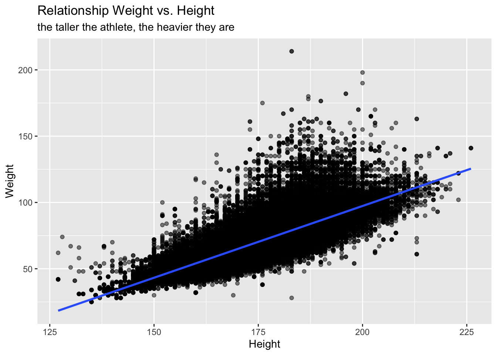
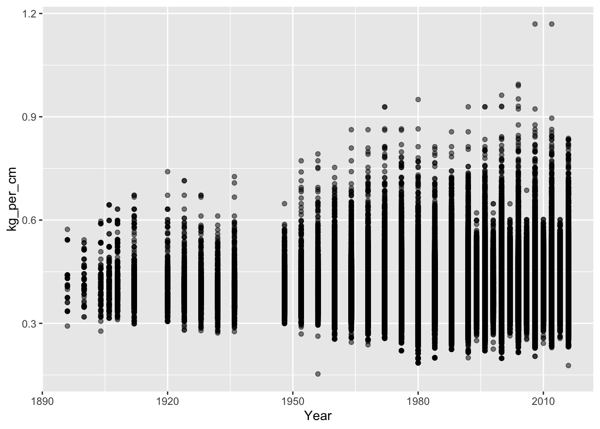
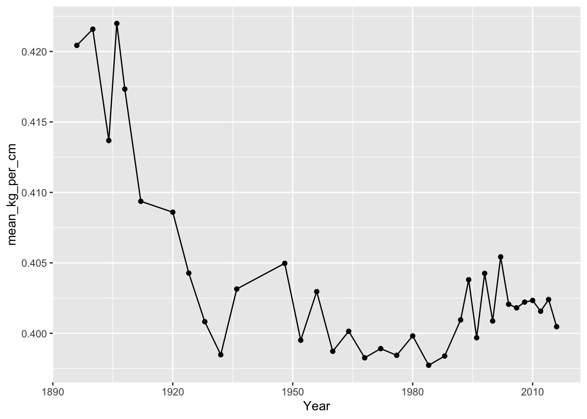
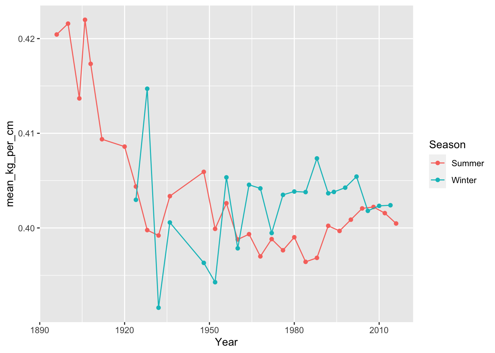
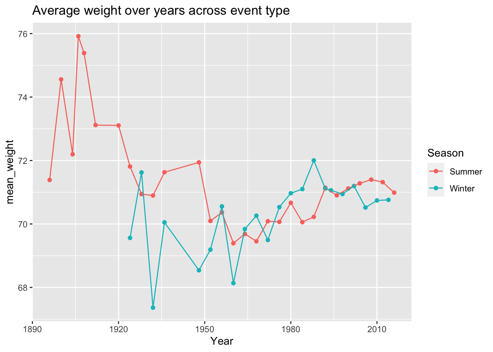
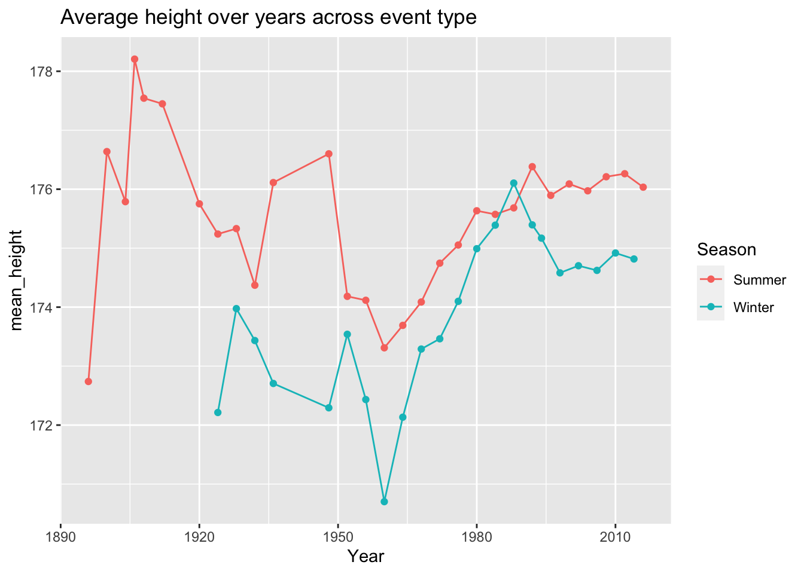
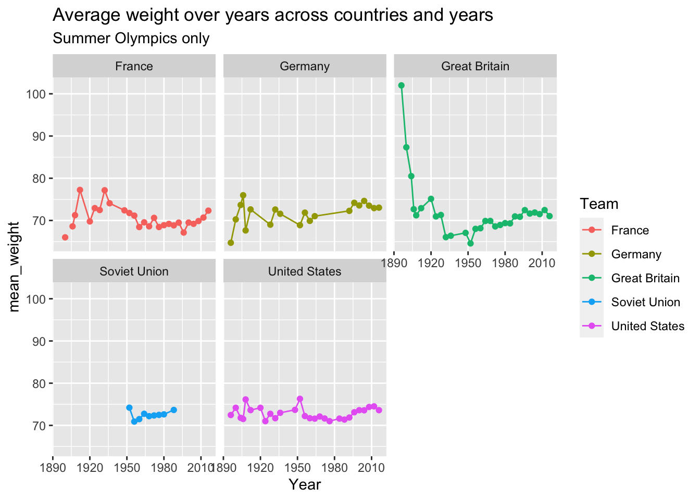

Module 10 Data Case Study 1
This is our first case study of the semester. The goal of each case study is to consolidate the content we’ve covered so far in class, which at this point includes:
Load libraries using
library()Read data using
read_csv()orread_excel()Inspect data using
summary()orglimpse()and/orView()Review your data question (what variables do you need to answer your question?)
Explore data using the following functions:
count()group_by()+summarise()
- Plot data using the functions above and:
filter()mutate()gglot(aes())+geom_...
# load library
library(tidyverse)
# read data in
olympic_events <- read_csv("data/olympic_history_athlete_events.csv")## Parsed with column specification:
## cols(
## ID = col_double(),
## Name = col_character(),
## Sex = col_character(),
## Age = col_double(),
## Height = col_double(),
## Weight = col_double(),
## Team = col_character(),
## NOC = col_character(),
## Games = col_character(),
## Year = col_double(),
## Season = col_character(),
## City = col_character(),
## Sport = col_character(),
## Event = col_character(),
## Medal = col_character()
## )## Parsed with column specification:
## cols(
## NOC = col_character(),
## region = col_character(),
## notes = col_character()
## )## Rows: 271,116
## Columns: 15
## $ ID <dbl> 1, 2, 3, 4, 5, 5, 5, 5, 5, 5, 6, 6, 6, 6, 6, 6, 6, 6, 7, 7, 7,…
## $ Name <chr> "A Dijiang", "A Lamusi", "Gunnar Nielsen Aaby", "Edgar Lindena…
## $ Sex <chr> "M", "M", "M", "M", "F", "F", "F", "F", "F", "F", "M", "M", "M…
## $ Age <dbl> 24, 23, 24, 34, 21, 21, 25, 25, 27, 27, 31, 31, 31, 31, 33, 33…
## $ Height <dbl> 180, 170, NA, NA, 185, 185, 185, 185, 185, 185, 188, 188, 188,…
## $ Weight <dbl> 80, 60, NA, NA, 82, 82, 82, 82, 82, 82, 75, 75, 75, 75, 75, 75…
## $ Team <chr> "China", "China", "Denmark", "Denmark/Sweden", "Netherlands", …
## $ NOC <chr> "CHN", "CHN", "DEN", "DEN", "NED", "NED", "NED", "NED", "NED",…
## $ Games <chr> "1992 Summer", "2012 Summer", "1920 Summer", "1900 Summer", "1…
## $ Year <dbl> 1992, 2012, 1920, 1900, 1988, 1988, 1992, 1992, 1994, 1994, 19…
## $ Season <chr> "Summer", "Summer", "Summer", "Summer", "Winter", "Winter", "W…
## $ City <chr> "Barcelona", "London", "Antwerpen", "Paris", "Calgary", "Calga…
## $ Sport <chr> "Basketball", "Judo", "Football", "Tug-Of-War", "Speed Skating…
## $ Event <chr> "Basketball Men's Basketball", "Judo Men's Extra-Lightweight",…
## $ Medal <chr> NA, NA, NA, "Gold", NA, NA, NA, NA, NA, NA, NA, NA, NA, NA, NA…## Rows: 230
## Columns: 3
## $ NOC <chr> "AFG", "AHO", "ALB", "ALG", "AND", "ANG", "ANT", "ANZ", "ARG",…
## $ region <chr> "Afghanistan", "Curacao", "Albania", "Algeria", "Andorra", "An…
## $ notes <chr> NA, "Netherlands Antilles", NA, NA, NA, NA, "Antigua and Barbu…10.1 Data Questions
Has athlete height and weight changed over time overall?
Has height and weight changed over time for the top 5 countries with the most medals?
10.2 Data Exploration
Suggestions of data exploration:
What type of olympics? What years? How many athletes per game?
## # A tibble: 51 x 2
## Games n
## <chr> <int>
## 1 1896 Summer 380
## 2 1900 Summer 1936
## 3 1904 Summer 1301
## 4 1906 Summer 1733
## 5 1908 Summer 3101
## 6 1912 Summer 4040
## 7 1920 Summer 4292
## 8 1924 Summer 5233
## 9 1924 Winter 460
## 10 1928 Summer 4992
## # … with 41 more rowsThis data set is huge, the plot below will take a while to process: 
What are the top countries for medal count?
## # A tibble: 783 x 3
## Team Medal n
## <chr> <chr> <int>
## 1 United States Gold 2474
## 2 United States Silver 1512
## 3 United States Bronze 1233
## 4 Soviet Union Gold 1058
## 5 Soviet Union Silver 716
## 6 Germany Gold 679
## 7 Germany Bronze 678
## 8 Soviet Union Bronze 677
## 9 Germany Silver 627
## 10 Great Britain Silver 582
## # … with 773 more rows10.3 Calculate height and weight relationship
It’s difficult to plot three numeric variables (in this case we want to plot weight, height, across different years) with so many data points. So I’ll create a new variable in my data frame with is the relationship between height and weight (i.e., kg per cm).
## # A tibble: 271,116 x 3
## Weight Height kg_per_cm
## <dbl> <dbl> <dbl>
## 1 80 180 0.444
## 2 60 170 0.353
## 3 NA NA NA
## 4 NA NA NA
## 5 82 185 0.443
## 6 82 185 0.443
## 7 82 185 0.443
## 8 82 185 0.443
## 9 82 185 0.443
## 10 82 185 0.443
## # … with 271,106 more rows10.4 Plot kilos per centimeter across years
Now that we have this new variable, which is kilos per centimeters, we can plot this variable across years.

Let’s see if summarised data (i.e., mean of kg_per_cm across year), makes more sense.

Let’s split by Summer vs. Winter olympics.

10.5 Plot weight over time

10.6 Plot height over time

10.7 Data Filtering
Get only top 5 countries for highest medal count
## # A tibble: 5 x 2
## Team n
## <chr> <int>
## 1 United States 5219
## 2 Soviet Union 2451
## 3 Germany 1984
## 4 Great Britain 1673
## 5 France 1550Create a list of these countries to filter the largest data set to create a smaller data frame.
## Rows: 56,100
## Columns: 16
## $ ID <dbl> 6, 6, 6, 6, 6, 6, 6, 6, 7, 7, 7, 7, 7, 7, 7, 7, 34, 52, 56,…
## $ Name <chr> "Per Knut Aaland", "Per Knut Aaland", "Per Knut Aaland", "P…
## $ Sex <chr> "M", "M", "M", "M", "M", "M", "M", "M", "M", "M", "M", "M",…
## $ Age <dbl> 31, 31, 31, 31, 33, 33, 33, 33, 31, 31, 31, 31, 33, 33, 33,…
## $ Height <dbl> 188, 188, 188, 188, 188, 188, 188, 188, 183, 183, 183, 183,…
## $ Weight <dbl> 75, 75, 75, 75, 75, 75, 75, 75, 72, 72, 72, 72, 72, 72, 72,…
## $ Team <chr> "United States", "United States", "United States", "United …
## $ NOC <chr> "USA", "USA", "USA", "USA", "USA", "USA", "USA", "USA", "US…
## $ Games <chr> "1992 Winter", "1992 Winter", "1992 Winter", "1992 Winter",…
## $ Year <dbl> 1992, 1992, 1992, 1992, 1994, 1994, 1994, 1994, 1992, 1992,…
## $ Season <chr> "Winter", "Winter", "Winter", "Winter", "Winter", "Winter",…
## $ City <chr> "Albertville", "Albertville", "Albertville", "Albertville",…
## $ Sport <chr> "Cross Country Skiing", "Cross Country Skiing", "Cross Coun…
## $ Event <chr> "Cross Country Skiing Men's 10 kilometres", "Cross Country …
## $ Medal <chr> NA, NA, NA, NA, NA, NA, NA, NA, NA, NA, NA, NA, NA, NA, NA,…
## $ kg_per_cm <dbl> 0.3989362, 0.3989362, 0.3989362, 0.3989362, 0.3989362, 0.39…10.8 Plot height and weight across countries over the years


10.9 Solving the problem of team name changes over time
We can use name of Olympic committee (NOC) to standardized Team to country
## # A tibble: 1,231 x 3
## NOC Team n
## <chr> <chr> <int>
## 1 AFG Afghanistan 126
## 2 AHO Netherlands Antilles 79
## 3 ALB Albania 70
## 4 ALG Algeria 551
## 5 AND Andorra 169
## 6 ANG Angola 267
## 7 ANT Antigua and Barbuda 133
## 8 ANZ Australasia 77
## 9 ANZ Sydney Rowing Club 9
## 10 ARG Acturus 2
## # … with 1,221 more rowsThe olympic_noc_regions data frame can help with that process.
## # A tibble: 6 x 3
## NOC region notes
## <chr> <chr> <chr>
## 1 AFG Afghanistan <NA>
## 2 AHO Curacao Netherlands Antilles
## 3 ALB Albania <NA>
## 4 ALG Algeria <NA>
## 5 AND Andorra <NA>
## 6 ANG Angola <NA>We can add region to our olympic_events data frame by joining the olympic_events data frame with the olympic_noc_regions data frame by the NOC column. For that we will use the left_join() function.
## Joining, by = "NOC"## # A tibble: 230 x 3
## NOC region n
## <chr> <chr> <int>
## 1 AFG Afghanistan 126
## 2 AHO Curacao 79
## 3 ALB Albania 70
## 4 ALG Algeria 551
## 5 AND Andorra 169
## 6 ANG Angola 267
## 7 ANT Antigua 133
## 8 ANZ Australia 86
## 9 ARG Argentina 3297
## 10 ARM Armenia 221
## # … with 220 more rowsLet’s check what we have for Russia now.
## # A tibble: 3 x 3
## NOC region n
## <chr> <chr> <int>
## 1 EUN Russia 864
## 2 RUS Russia 5143
## 3 URS Russia 5685We can now calculate medals per region instead of team name. Get only top 5 countries for highest medal count
## # A tibble: 5 x 2
## region n
## <chr> <int>
## 1 USA 5637
## 2 Russia 3947
## 3 Germany 3756
## 4 UK 2068
## 5 France 177710.10 DATA CHALLENGE 05
Accept data challenge 05 assignment